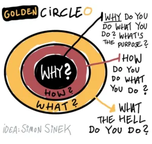
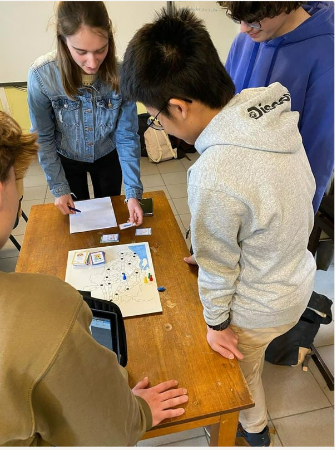

Het proces
Aan het begin van het jaar waren we aan het brainstormen over wat we konden doen, en met behulp van de Golden Circle kwamen we er snel achter dat we anders- en meertalige nieuwkomers wilden helpen. We wilden dit op een leuke manier doen en zo ontstond het idee om een bordspel te maken. Daarnaast besloten we dat we de nieuwkomers ook de cultuur wilden laten ervaren en begrijpen.

Salco Okan
We hebben ons spel ook getest in de OKAN-klas van Salco en dit was een enorm succes. We hebben feedback ontvangen van de leerlingen en hebben deze feedback serieus genomen. Met hun opmerkingen zijn we aan de slag gegaan en nu zijn we klaar met ons definitieve product, dat gereed is voor jullie om mee te spelen en van te leren.